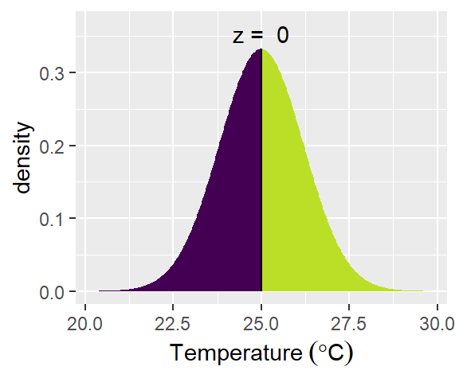
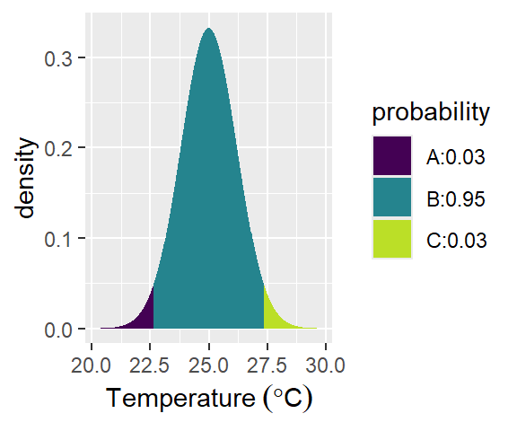
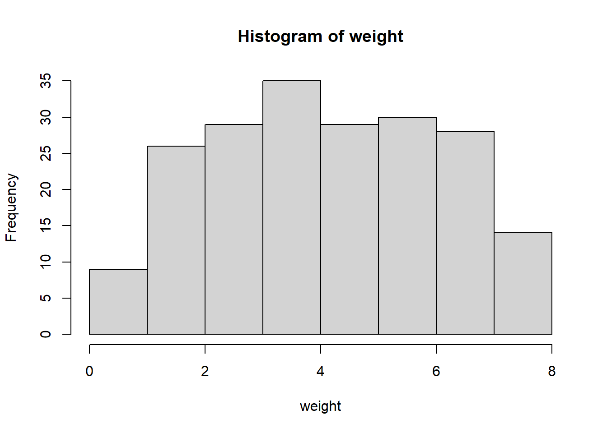

Introduction
In the world of statistics, there are three main types that are commonly used to analyze and interpret data: descriptive, inferential, and Bayesian. Each type serves a specific purpose and provides valuable insights into different aspects of the data.
While descriptive statistics provides valuable insights into the basic features of a dataset (Figure 1), inferential statistics takes it a step further by making inferences or predictions about a population based on a sample. This type of statistics involves hypothesis testing, confidence intervals, and regression analysis, among other techniques.
Bayesian statistics, on the other hand, provides a framework for updating beliefs about parameters or hypotheses based on new evidence or data. It differs from traditional frequentist statistics in that it incorporates prior knowledge or beliefs about the parameters being estimated.

In future sessions, we will delve deeper into inferential and Bayesian statistics to explore their applications and implications in data analysis. In this blog post, we will focus on descriptive statistics (Figure 1) and explore the central tendency theorem, as well as the measures of center and dispersion.
Descriptive Statistics
Descriptive statistics is a branch of statistics focused on summarizing, organizing, and presenting data in a clear and understandable way. Its primary aim is to define and analyze the fundamental characteristics of a dataset without making sweeping generalizations or assumptions about the entire data set.
The main purpose of descriptive statistics is to provide a straightforward and concise overview of the data, enabling researchers or analysts to gain insights and understand patterns, trends, and distributions within the dataset.
Descriptive statistics typically involve measures of central tendency (such as mean, median, mode), dispersion (such as range, variance, standard deviation), and distribution shape (including skewness and kurtosis). Additionally, graphical representations like charts, graphs, and tables are commonly used to visualize and interpret the data.
Histograms, bar charts, pie charts, scatter plots, and box plots are some examples of widely used graphical techniques in descriptive statistics.
Types of Descriptive Statistics
There are two types of descriptive statistics:
- Measures of Central Tendency
- Measures of Dispersion
Measures of Central Tendency
The central tendency is defined as a statistical measure that may be used to describe a complete distribution or dataset with a single value, known as a measure of central tendency. Any of the central tendency measures accurately describes the whole data distribution. In the following sections, we will look at the central tendency measures, their formulae, applications, and kinds in depth.
Mean
Mean is the sum of all the components in a group or collection divided by the number of items in that group or collection. Mean of a data collection is typically represented as x̄ (pronounced “x bar”). The formula for calculating the mean for ungrouped data to express it as the measure is given as follows:
For a series of observations:
\[ \bar x = \sum \frac{x}{n} \tag{1}\]
Where,
- \(\bar x\) = Mean values of the vector
- \(\sum x\) Sum of all terms
- \(n\) number of observations
Example 1 Weights of 7 girls in kg are 54, 32, 45, 61, 20, 66 and 50. create a vector object from these values and compute the mean of the data.
Median
Median of a data set is the value of the middle-most observation obtained after organizing the data in ascending order, which is one of the measures of central tendency. Median formula may be used to compute the median for many types of data, such as grouped and ungrouped data.
Example 2 Weights of 7 girls in kg are 54, 32, 45, 61, 20, 66 and 50. crreate a vector object from these values and compute the median of the data.
Mode
Mode is one of the measures of central tendency, defined as the value that appears the most frequently in the provided data, i.e. the observation with the highest frequency is known as the mode of data. The mode formulae provided below can be used to compute the mode for ungrouped data.
Example 3 Weights of 7 girls in kg are 54, 32, 45, 61, 20, 66 and 50. create a vector object from these values and compute the mode of these data.
Measure of Dispersion
Another important property of a distribution is the dispersion. Some of the parameters that can be used to quantify dispersion are illustrated in Figure 3.

If the variability of data within an experiment must be established, absolute measures of variability should be employed. These metrics often reflect differences in a data collection in terms of the average deviations of the observations. The most prevalent absolute measurements of deviation are mentioned below. In the following sections, we will look at the variability measures, their formulae in depth.
- Range
- Standard Deviation
- Variance
Range
The range represents the spread of your data from the lowest to the highest value in the distribution. It is the most straightforward measure of variability to compute. To get the range, subtract the data set’s lowest and highest values.
Range = Highest Value – Lowest Value
Example 4 Calculate the range of the following data series: 5, 13, 32, 42, 15, 84
Standard Deviation
Standard deviation (s or SD) represents the average level of variability in your dataset. It represents the average deviation of each score from the mean. The higher the standard deviation, the more varied the dataset is.
To calculate standard deviation, follow these six steps:
Make a list of each score and calculate the mean.
Calculate deviation from the mean, by subtracting the mean from each score.
Square each of these differences.
Sum up all squared variances.
Divide the total of squared variances by N-1.
1.Find the square root of the number that you discovered.
Example 5 Calculate standard deviation of the following data series: 5, 13, 32, 42, 15, 84.
Variance
Variance is calculated as average of squared departures from the mean. Variance measures the degree of dispersion in a data collection. The more scattered the data, the larger the variance in relation to the mean. To calculate the variance, square the standard deviation.
Example 6 Calculate standard deviation of the following data series: 5, 13, 32, 42, 15, 84.
Shape of the distribution
Skewness
Skewness is a measure of the asymmetry of the tails of a distribution. A negative skew indicates that the distribution is spread out more to the left of the mean value, assuming values increasing towards the right along the axis. Th e sample mean is in this case smaller than the mode. Distributions with positive skewness have large tails that extend towards the right. Th e skewness of the symmetric normal distribution is zero.
The most popular way to compute the asymmetry of a distribution is by Pearson’s mode skewness:
\[ skewness = \frac{mean - mode}{standar deviation} \] Although Pearson’s measure is a useful one, a Fisher formula is often used, which is defined as;
\[ skewness = \sum_{i-1}^N \frac{(x - \bar x)}{s^3}^2 \tag{2}\]
Kurtosis
The second important measure for the sape of the distribution is the kurtosis. The kurtosis is a measure of whether the data are peaked or flat relative to a normal distribution. A normal distribution has a kurtosis of three. A high kurtosis indicates that the distribution has a distinct peak near the mean, whereas a distribution characterized by a low kurtosis shows a flat top near the mean and broad tails. Higher peakedness in a distribution results from rare extreme deviations, whereas a low kurtosis is caused by frequent moderate deviations. Kurtosis formula is defined as :
\[ kurtosis = \sum \frac{(x_i - \bar x)^4}{s^4} \tag{3}\]
Example of distribution
R has several functions to numerically summarize variables. These include the capability of calculating the mean, standard deviation, variance, median, five number summary, interquartile range (IQR) as well as arbitrary quantiles. To improve the legibility of output, we will also set the default number of digits to display to a more reasonable level (see ?options() for more configuration possibilities).
Simulate the weight of tuna species in the WIO region
As an example, we can simulate the weight of yellow fin tuna in the tropical Indian ocean. According to , yellow fin tuna weight range from 0.5 to 7.8 kg and we can use runif function in R to generate a sample of 200 individual as the code highlight;
weight = runif(n = 200, min = 0.5, max = 7.8)
# weight = rnorm(n = 200, mean = 4.10, sd = .28)
weight |> hist()
Inbuilt function exists for summary statistics.
It is also straightforward to calculate quantiles of the distribution.
Rather than computing the metrics as individual, some packages have dedicated functions that produce the summary statistic. For example, the psych package has describe function;
vars n mean sd median trimmed mad min max range skew kurtosis se
X1 1 200 4.09 1.96 4.06 4.08 2.27 0.54 7.79 7.25 0.03 -1.07 0.14Descriptive Statistics
weight
N: 200
weight
----------------- --------
Mean 4.09
Std.Dev 1.96
Min 0.54
Q1 2.60
Median 4.06
Q3 5.61
Max 7.79
MAD 2.27
IQR 2.97
CV 0.48
Skewness 0.03
SE.Skewness 0.17
Kurtosis -1.07
N.Valid 200.00
Pct.Valid 100.00 weight
N 200
Mean 4.09
Median 4.06
10% Trimmed Mean 4.08
Geometric Mean 3.5
Skew 0.0267
Kurtosis -1.05
Min 0.54
Max 7.79
Range 7.25
1st Quartile 2.63
3rd Quartile 5.6
Standard Deviation 1.96
Geometric Standard Deviation 1.86
Interquartile Range 2.97
Median Absolute Deviation 2.27
Coefficient of Variation 0.48 Finally, the report function in the report package provides a concise summary of many useful statistics.
x: n = 200, Mean = 4.09, SD = 1.96, Median = 4.06, MAD = 2.27, range: [0.54,
7.79], Skewness = 0.03, Kurtosis = -1.05, 0% missingLikewise, the fav_stats function in mosaic package
Graphical Summaries
Th e functions hist provide numerous ways of binning the data, of normalizing the data, and of displaying the histogram.
Th e functions boxplot provide five summary number (min, Q1, median, Q3, max) values that are displayed in boxplot
Summary
Understanding both central tendency and dispersion is essential for gaining insights into the characteristics of a dataset. Together, these measures can help to identify patterns, trends, and potential outliers within the data.